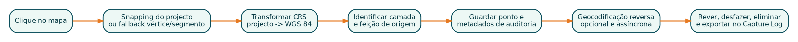

5 Parte III - Desenvolvimento intermédio
5.1 8. Trabalhar com projectos e camadas
5.1.1 8.1 QgsProject
A instância actual:
project = QgsProject.instance()Adicionar camada:
layer = QgsVectorLayer(path, layer_name, "ogr")
if layer.isValid():
project.addMapLayer(layer)Nunca assuma que a camada carregou. Valide e registe a mensagem do fornecedor quando disponível.
5.1.2 8.2 Camada de memória
GeoClick Capture cria uma camada temporária quando não existe destino:
layer = QgsVectorLayer(
"Point?crs=EPSG:4326",
"Captured Points Log",
"memory",
)
provider = layer.dataProvider()
provider.addAttributes([
QgsField("id", QVariant.Int),
QgsField("captured_at", QVariant.String),
QgsField("lat", QVariant.Double),
QgsField("lon", QVariant.Double),
])
layer.updateFields()
QgsProject.instance().addMapLayer(layer)Uma camada de memória é útil para sessões temporárias. Para persistência imediata, prefira GeoPackage.
5.1.3 8.3 Adicionar feições
feature = QgsFeature(layer.fields())
feature.setGeometry(QgsGeometry.fromPointXY(point))
feature["id"] = next_id
feature["captured_at"] = timestamp
feature["lat"] = latitude
feature["lon"] = longitude
ok, created = layer.dataProvider().addFeatures([feature])
if not ok:
raise RuntimeError("The point could not be added.")Considere edição transaccional e undo/redo quando altera camadas existentes do utilizador. Para camadas geridas pelo plugin, a escrita directa pelo provider pode ser suficiente, desde que os IDs e campos sejam controlados.
5.2 9. Sistemas de referência e coordenadas
5.2.1 9.1 Nunca confundir coordenadas do mapa com latitude/longitude
O clique é devolvido no CRS do mapa. Se o projecto estiver em UTM, os valores podem ser Este/Norte em metros, não longitude/latitude.
project_crs = canvas.mapSettings().destinationCrs()
wgs84 = QgsCoordinateReferenceSystem("EPSG:4326")
transform = QgsCoordinateTransform(
project_crs,
wgs84,
QgsProject.instance(),
)
wgs84_point = transform.transform(map_point)
lon = float(wgs84_point.x())
lat = float(wgs84_point.y())5.2.2 9.2 Transformar para a camada de destino
Se a camada de destino tem outro CRS, transforme a geometria antes de gravar:
layer_transform = QgsCoordinateTransform(
project_crs,
layer.crs(),
QgsProject.instance(),
)
layer_point = layer_transform.transform(map_point)5.2.3 9.3 Guardar ambos os sistemas
Para auditoria, é útil guardar:
- latitude e longitude em WGS 84;
- X e Y no CRS do projecto;
- identificador ou descrição do CRS;
- geometria no CRS da camada de destino.
Esta estratégia foi adoptada pelo GeoClick Capture e facilita comparação com mapas, GPS e bases institucionais.
5.3 10. Leitura de GPX e escrita de formatos GIS
Um ficheiro GPX pode expor subcamadas:
- waypoints;
- routes;
- route_points;
- tracks;
- track_points.
Nem todos os ficheiros possuem todas as subcamadas. Ausência não é, por si só, erro.
5.3.1 10.1 Abrir subcamada GPX
uri = f"{gpx_path}?type={layer_name}"
source = QgsVectorLayer(uri, layer_name, "gpx")
if not source.isValid() or source.featureCount() == 0:
# Registar como missing/empty, não como falha fatal.
return5.3.2 10.2 Escolher formatos de saída
Uma tabela de configuração reduz condicionais:
OUTPUT_FORMATS = {
"ESRI Shapefile": {
"driver": "ESRI Shapefile",
"extension": ".shp",
"layer_creation_options": ["ENCODING=UTF-8"],
},
"GeoPackage": {
"driver": "GPKG",
"extension": ".gpkg",
"layer_creation_options": [],
},
"GeoJSON": {
"driver": "GeoJSON",
"extension": ".geojson",
"layer_creation_options": [],
},
}5.3.3 10.3 Limitações do Shapefile
O Shapefile é amplamente suportado, mas possui limitações:
- nomes de campos curtos;
- conjunto de ficheiros relacionados;
- tipos de dados limitados;
- dificuldades de encoding;
- um tipo de geometria por camada.
Para dados modernos, GeoPackage é muitas vezes a melhor saída padrão. Contudo, mantenha Shapefile quando a interoperabilidade institucional exigir.
5.3.4 10.4 Proveniência
Ao fundir dados, adicione campos que identifiquem a origem:
source_file
source_path
source_layerSem proveniência, a fusão reduz rastreabilidade. O GPX Batch Converter inclui estes campos nos resultados fundidos.
5.4 11. Tarefas em segundo plano
Operações longas não devem executar no thread da interface. Um ciclo com centenas de ficheiros pode congelar o QGIS e levar o utilizador a encerrar a aplicação.
5.4.1 11.1 QgsTask
class ConversionTask(QgsTask):
def __init__(self, files, callback):
super().__init__("Convert files", task_can_cancel_flag())
self.files = files
self.callback = callback
self.results = []
self.error = None
def run(self):
try:
for index, path in enumerate(self.files, start=1):
if self.isCanceled():
return False
self.convert_one(path)
self.setProgress(index / len(self.files) * 100)
return True
except Exception as exc:
self.error = exc
return False
def finished(self, result):
self.callback(self, result)Adicionar ao gestor:
QgsApplication.taskManager().addTask(task)5.4.2 11.2 Regra do thread principal
No método run() de uma tarefa:
- não altere widgets;
- não adicione camadas ao projecto;
- não aceda a objectos Qt que pertençam ao thread principal;
- trabalhe com dados independentes, caminhos e APIs thread-safe.
No finished() ou callback:
- actualize a interface;
- adicione saídas ao projecto;
- apresente o resumo.
5.4.3 11.3 Cancelamento
Cancelamento deve ser cooperativo. Verifique isCanceled() em intervalos curtos. Se existe processo externo activo, termine-o com timeout e depois force a paragem, registando falhas.
No GPX Batch Converter, a tarefa mantém referência ao processo GDAL actual, chama terminate(), aguarda e usa kill() apenas quando necessário.
5.5 12. Resultados, progresso e logs
Uma barra de progresso isolada não explica o que aconteceu. Para lotes, mantenha uma lista de resultados com:
source_file
layer
status
feature_count
output_path
messageEstados recomendados:
- converted;
- merged;
- included;
- missing_or_empty;
- skipped_existing;
- failed;
- cancelled.
O resumo deve separar falhas reais de camadas ausentes. Isto evita que um GPX sem waypoints seja apresentado como erro.
5.5.1 12.1 Mensagens no QGIS
self.iface.messageBar().pushMessage(
"Plugin",
"Conversion completed.",
level=success_level,
duration=5,
)Para diagnóstico técnico:
QgsMessageLog.logMessage(
detailed_message,
"My Plugin",
level=Qgis.MessageLevel.Warning,
)Não mostre dados sensíveis, tokens ou caminhos confidenciais em logs públicos.
5.6 13. Ferramentas de mapa
Para responder a cliques:
from qgis.gui import QgsMapToolEmitPoint
self.tool = QgsMapToolEmitPoint(self.canvas)
self.tool.canvasClicked.connect(self.handle_map_click)
self.canvas.setMapTool(self.tool)Ao desactivar:
if self.canvas.mapTool() is self.tool:
self.canvas.unsetMapTool(self.tool)5.6.1 13.1 Identificar a feição sob o clique
QgsMapToolIdentify pode devolver a camada e a feição. Restrinja a pesquisa a camadas relevantes e visíveis quando possível. Guarde nome, ID da camada e ID da feição para auditoria.
5.6.2 13.2 Estado visual
A acção de captura deve ser verificável. O painel e a toolbar devem mostrar o mesmo estado. Mostre uma mensagem curta quando o modo é activado.
5.7 14. Snapping a vértices e segmentos
Snapping melhora precisão e evita pontos quase coincidentes.
Estratégia robusta:
- usar a configuração de snapping do projecto;
- se não existir correspondência, procurar camadas visíveis de linha e polígono;
- dar prioridade ao vértice mais próximo;
- usar o segmento mais próximo apenas quando nenhum vértice está dentro da tolerância;
- registar se houve snapping, o tipo e a distância.

5.7.1 14.1 Tolerância em pixels
A tolerância em pixels oferece experiência consistente em diferentes escalas. Converta para unidades do mapa:
tolerance_map = tolerance_pixels * canvas.mapUnitsPerPixel()Quando a camada tem CRS diferente, transforme o ponto e uma distância de referência para estimar a tolerância na unidade da camada.
5.7.2 14.2 Auditoria do snapping
Campos úteis:
snapped boolean
snap_type vertex | segment | project snapping
snap_distance distância em unidades do mapa5.8 15. Pedidos de rede e geocodificação reversa
Plugins QGIS devem utilizar QgsNetworkAccessManager para respeitar proxy, autenticação e definições de rede da aplicação.
manager = QgsNetworkAccessManager.instance()
request = QNetworkRequest(QUrl(url))
reply = manager.get(request)
reply.finished.connect(lambda: self.handle_reply(reply))5.8.1 15.1 Regras de um cliente responsável
- identificar a aplicação no
User-Agent; - respeitar limites do fornecedor;
- adicionar timeout;
- tratar redireccionamentos com segurança;
- validar HTTP, rede, SSL e JSON;
- armazenar cache;
- evitar pedidos duplicados;
- permitir desligar a funcionalidade;
- manter a função principal independente da rede.
No GeoClick Capture, o ponto é sempre guardado primeiro. A geocodificação actualiza o campo de localização depois. Assim, falha de Internet não causa perda do registo.
5.8.2 15.2 Sem resultado não é falha de rede
Um serviço pode responder que não encontrou endereço. Trate separadamente:
- falha de ligação;
- limite HTTP 429;
- rejeição 403;
- erro do servidor;
- resposta válida sem endereço.
Uma estratégia de fallback pode pedir níveis mais amplos: endereço, assentamento, cidade, província e país. Respeite o intervalo mínimo entre pedidos.
5.9 16. Preferências persistentes
QgsSettings guarda opções por utilizador:
settings = QgsSettings()
settings.setValue("my_plugin/operator", operator_name)
operator_name = settings.value("my_plugin/operator", "", type=str)Use um prefixo exclusivo. Guarde apenas preferências, não dados sensíveis.
Exemplos:
- última pasta de saída;
- formato preferido;
- geocodificação ligada/desligada;
- nome do operador;
- tolerância de snapping;
- camada seleccionada, quando a referência puder ser restaurada com segurança.